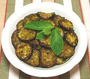

|
Marinated Zucchini AppetizerItaly - Zucchini a scapace | ||||
| Serves: Effort: Sched: DoAhead: |
4 app ** 1-1/2 hrs Yes |
This popular antipasto / appetizer is easy to make and can wait patiently to be served. It can be served warm or cool. | |||
|
|
1-1/2 2 ------ 2 2 2 1/3 1/4 ------ |
# T --- T T T t t --- |
Zucchini, thin (1) Olive Oil, Pure -- Dressing Olive Oil, ExtV Wine Vinegar, white Mint Leaves, fresh Salt Pepper -- Serve with Bread Olives |
Make - (1-1/2 hours or more - 20min work)
|